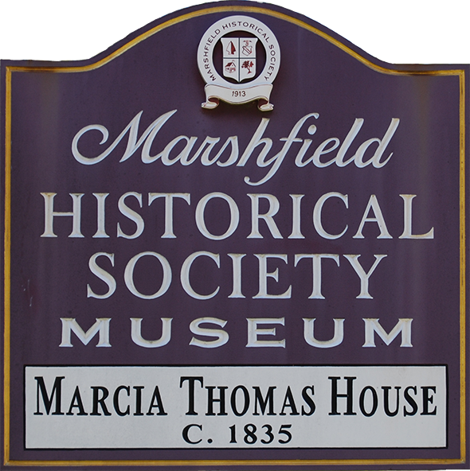

About Us
Mission Statement
The mission of the Marshfield Historical Society is:
- To preserve historic structures,
- To collect, display, and preserve artifacts, archives, and photographs relative to the Town of Marshfield and its surroundings,
- And to educate and inform the public about the history of Marshfield
What We Do
The Marshfield Historical Society was formed in 1913 by Lysander S. Richards. Since then, we have worked to educate others about the history of Marshfield. We preserve important documents and artifacts such as maps, furniture, and more. In addition, the Society owns and cares for two historic properties: the Marcia Thomas House and the Winslow Schoolhouse.
The Marcia Thomas House is both our headquarters and a museum. It was moved from its original location on Ocean Street to Webster Street in 1997. The museum and its archives are open to the public monthly during limited hours. You can learn more on the Marcia Thomas House page.
If you are interested in learning more about the history of Marshfield, you are welcome to attend our events and even join the society! We host annual meetings as well as a series of Pro-Am lectures given by local historians.
Board of Directors
David Welch, President
Dottie Melcher, 1st Vice President & Curator
Allen Uhler, 2nd Vice President
Barbara Pearson, Recording and Corresponding Secretary
Cindy Castro, Treasurer
Norman McGilvray Sr., Associate Director
Paul Bowers
Jane Davidson
Tim Davidson
Patrick Overstreet
Glenn McDonald
Paulette Combs
Charles Bradford